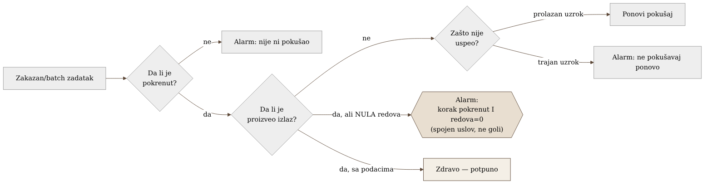
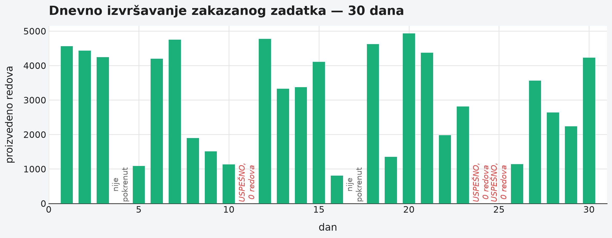

Poglavlje 23 — Batch/ETL flota zadataka
Noćni pekar ne meri uspeh po tome da li je rerna bila upaljena. Rerna upaljena tri sata je samo činjenica o potrošnji struje — ne govori ništa o tome da li je testo uopšte umešeno, da li je ostavljeno da naraste dovoljno dugo, i, na kraju, da li je iz rerne izašao hleb koji se može prodati ujutru. Pekar koji bi vodio evidenciju samo "rerna je radila od ponoći do tri" bi propustio noć u kojoj je testo zaboravljeno na pultu, nikad stavljeno unutra — rerna bi i dalje bila upaljena, trošila struju, i po toj jedinoj evidenciji izgledala bi kao savršeno uspešna smena. Pravi pekar proverava tri odvojene stvari: da li je proces uopšte krenuo, da li je nešto na kraju stvarno izašlo, i, ako nije, zašto. Rerna koja radi bez hleba na kraju nije uspešna noć — samo je skupa.
23.1 Pitanje na koje ovo poglavlje odgovara
Flota zadataka koji se pokreću po rasporedu ili na zahtev — ne servisi koji stalno primaju saobraćaj, nego zadaci koji se pojave, urade posao, i nestanu — ne odgovara na ista pitanja kao servis koji sluša mrežni port. Šta znači "zdrav" batch zadatak, i zašto zeleni izlazni kod sam po sebi nije dovoljan dokaz da je posao obavljen?
23.2 Kako je to urađeno — praktičan pregled
Model potpunosti umesto uobičajenog obrasca za servise
Umesto standardnog obrasca praćenja servisa — stopa zahteva, greške, trajanje — implementacija flote batch zadataka koristi drugačiji okvir, prilagođen prirodi posla: da li je zadatak uopšte pokrenut, da li je proizveo bilo šta, i, ako nije uspeo, zašto. Ovaj model potpunosti namerno ne pokušava da forsira batch zadatak u kalup napravljen za servise koji stalno primaju saobraćaj — jer pojedinačan zakazan zadatak nema smislenu "stopu zahteva," a njegovo trajanje bez potvrde da je zaista nešto proizveo ne govori ništa korisno samo po sebi.
Poseban i namerno drugačiji obrazac: uspešno završeno, ali prazno
Najvažniji, i najlakše propušten oblik kvara koji je implementacija eksplicitno pokrila jeste zadatak koji se završi sa urednim, uspešnim izlaznim kodom — ali koji nije proizveo nijedan red podataka. Alarm za ovaj slučaj je namerno napisan kao dva odvojena uslova spojena zajedno: korak je stvarno pokrenut I broj proizvedenih redova je nula — ne samo goli uslov "broj redova je nula." Razlika je bitna: goli uslov bi lažno alarmirao i u potpuno normalnoj situaciji kada korak uopšte nije trebalo da se izvrši tog dana. Spojen uslov alarmira samo kada je proces stvarno pokušao, i stvarno nije proizveo ništa — tačno onaj scenario koji zeleni izlazni kod sam po sebi sakriva.
Redosled promena na infrastrukturi izvršavanja zadataka
Sistem za izvršavanje batch zadataka koji implementacija koristi radi na istoj osnovnoj infrastrukturi kao i servisi koji stalno primaju saobraćaj — što znači da se, iznenađujuće, dobar deo postojeće infrastrukture za alarme (mehanizam koji sluša promene stanja izvršavanja) mogao ponovo iskoristiti bez pisanja nečeg potpuno novog. Uz to, implementacija je zategla pravila ponovnog pokušavanja: umesto da svaki neuspeh automatski pokuša ponovo, pravila su definisana da razlikuju prolazan uzrok neuspeha (privremen problem infrastrukture, dostupnost resursa) od trajnog uzroka (greška u samoj logici zadatka, loš ulazni podatak) — jer ponovno pokušavanje trajne greške samo troši budžet pokušaja bez ikakve šanse da drugi pokušaj uspe.
Eliminacija jedne klase prekida promenom redosleda, ne dodavanjem otpornosti
Jedan konkretan izvor nestabilnosti — prekid jeftinijeg, ali manje pouzdanog tipa računarskog kapaciteta — rešen je promenom redosleda kojim sistem bira odakle da uzme kapacitet, umesto dodavanjem dodatne logike za oporavak od prekida. Ovo je vredna lekcija sama po sebi: nije svaki problem sa pouzdanošću rešen dodavanjem otpornosti na kvar — nekad je jeftinije i pouzdanije jednostavno promeniti redosled izbora tako da se manje pouzdana opcija ređe uopšte i koristi.
Trenutno stanje: van glavnog cevovoda za telemetriju
Implementacija beleži i ono što još nije urađeno, ne samo ono što jeste: flota batch zadataka trenutno šalje svoje logove kroz stariji, direktan put ka platformi za logove, van glavnog OpenTelemetry cevovoda koji pokriva ostatak sistema. Ovo je zabeleženo kao poznata razlika u pokrivenosti, ne kao skriven propust — jasno imenovana granica onoga što je urađeno u odnosu na ostatak arhitekture.


23.3 Analitički deo — poznat kontrast sa standardnim metodom za servise
RED metod je namenjen drugačijem obliku opterećenja
Standardni metod za instrumentaciju servisa — stopa zahteva, greške, trajanje — je 2015. godine formulisan namenski za mikroservise sa kontinualnim tokom zahteva: API-je, gateway-e, sve gde su "stopa" i "raspodela latencije" smisleni pojmovi jer postoji stalan protok zahteva kroz koji se ti pojmovi mogu meriti. Nijedan pregledan izvor ne tvrdi eksplicitno da ovaj metod "ne radi" za batch zadatke — ali svaki sekundarni izvor koji ga opisuje ograničava njegov domen na sinhroni, zahtev/odgovor saobraćaj. Pojedinačno zakazano izvršavanje batch zadatka nema smislenu "stopu," i njegovo trajanje bez signala o potpunosti ne govori ništa o tome da li je posao stvarno obavljen — tačno jaz koji model potpunosti implementacije popunjava.
"Zeleni izlazni kod sakriva prazan rezultat" je priznat, imenovan obrazac
Ovaj tačan scenario — proces koji se uredno završi, ali isporuči nepotpun ili netačan rezultat — je eksplicitno imenovan u literaturi o kvalitetu podataka kao poseban i posebno skup oblik kvara, upravo zato što prolazi neopaženo do trenutka kad neko drugi, nizvodno, primeti da nedostaje očekivan podatak. Standardna preporuka iz te iste literature je identična odluci implementacije: upariti signal o završetku procesa sa nezavisnim signalom o zapremini/svežini rezultata, jer sam završetak procesa ne nosi garanciju o sadržaju.
Zvanična dokumentacija potvrđuje princip razlikovanja prolaznog od trajnog uzroka
Zvanična dokumentacija mehanizma za ponovno pokušavanje batch zadataka eksplicitno preporučuje da se pravila ponovnog pokušaja završe sveobuhvatnim pravilom koje ne pokušava ponovo neuparene ili trajne uzroke neuspeha — direktna potvrda da je namerno ograničavanje ponovnih pokušaja na prolazne uzroke zvanično preporučena praksa, ne konzervativan izbor implementacije bez podrške.
Redosled izbora kapaciteta kao dokumentovana, preporučena strategija
Zvanična preporuka za korišćenje jeftinijeg, prekidivog kapaciteta eksplicitno preporučuje strategiju izbora koja uzima u obzir i cenu i verovatnoću prekida zajedno, umesto strategije koja optimizuje samo cenu — potvrđujući da je promena redosleda izbora kapaciteta, koju je implementacija primenila, upravo ona vrsta rešenja koju zvanična dokumentacija preporučuje kao prvi korak, pre složenijih mehanizama otpornosti.
Kontrafaktički scenario: šta zeleni status krije
Zamislimo tim koji prati flotu batch zadataka isključivo kroz to da li se svaki zadatak završio sa uspešnim izlaznim kodom — bez ijedne provere zapremine izlaza. Neki zadatak koji zavisi od spoljnog izvora podataka bi mogao, zbog tihe promene na strani tog izvora, primiti prazan odgovor, uredno ga obraditi (obrada nule redova je i sama, tehnički, uspešna operacija), i završiti se sa zelenim statusom. Dashboard bi izgledao besprekorno — sve zeleno, nijedan neuspeh. Prava šteta — praznina u podacima nizvodno — bi ostala nevidljiva sve dok je neko drugi, mnogo kasnije, ne otkrije ručno, pitajući se zašto izveštaj koji zavisi od tih podataka izgleda pogrešno.
Vratimo se pekaru s početka poglavlja. Rerna koja radi tri sata nije vest — vest je da li je iz nje izašao hleb. Pekar koji proverava sve tri stvari — da li je testo umešeno, da li je stavljeno unutra, da li je izašao hleb — ne gubi vreme na suvišnu proveru; gubi manje vremena nego pekar koji sazna tek ujutru, od mušterija, da police stoje prazne.
23.4 Skupljena pravila iz ovog poglavlja
- Prati batch/ETL zadatke kroz model potpunosti — da li je pokrenut, da li je proizveo izlaz, zašto nije ako nije — umesto da forsiraš metrike namenjene servisima sa stalnim saobraćajem na posao koji nema smislenu "stopu zahteva."
- Piši alarm za "uspešno završeno, ali prazno" kao spojen uslov — korak pokrenut I nula redova — nikad kao goli uslov "nula redova," koji bi lažno alarmirao u danima kad zadatak legitimno nije trebalo da se izvrši.
- Razdvoj prolazne od trajnih uzroka neuspeha u pravilima ponovnog pokušavanja — ponovno pokušavanje trajnog uzroka samo troši budžet pokušaja bez ikakve šanse za uspeh.
- Razmisli da li se problem sa pouzdanošću rešava promenom redosleda izbora resursa umesto dodavanjem složenije logike za oporavak — nekad je jeftinije rešenje jednostavnije.
- Beleži poznate praznine u pokrivenosti eksplicitno — na primer, koji deo flote još nije uključen u glavni cevovod za telemetriju — umesto da praznina ostane skrivena dok je neko slučajno ne otkrije.
23.5 Vežba za čitaoca
Pronađi jedan zakazan zadatak u tvom sistemu koji se trenutno prati samo kroz uspešan/neuspešan izlazni kod. Postavi pitanje: da li bi taj zadatak mogao da se "uspešno" završi bez da je stvarno proizveo očekivan izlaz — i ako da, postoji li trenutno ijedan alarm koji bi tu situaciju uhvatio?
Izvori korišćeni u analitičkom delu
- The RED Method: How to Instrument Your Services — Grafana Labs
- Automated job retries — AWS Batch User Guide
- EvaluateOnExit — AWS Batch API Reference
- Use Amazon EC2 Spot best practices for AWS Batch
- Data quality and Airflow — Astronomer Documentation
- Data Pipeline Observability: What It Is and Why It Matters — Airbyte